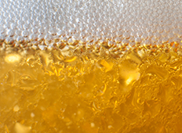

Chemistry of Beer - Course Completion
The student has attempted and completed the course unit assignments and a comprehensive final and met and/or exceeded the minimum grade requirement sufficient for attaining this badge. Units include health impact of alcohol, beer styles, malting and kiling, mashing and lautering, boiling and hopping, fermentation, and finishing and packaging.